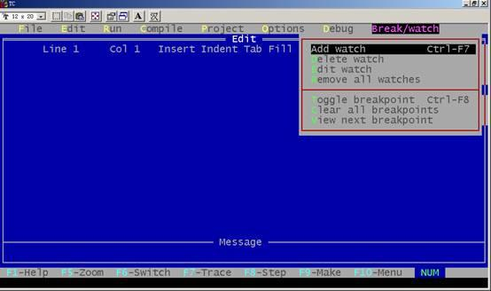

ITEEDU
1.13.9 Debug菜单
按Alt+D可选择Debug菜单, 该菜单主要用于查错, 它包括以下内容，如图所示：

1.Evaluate
1)Expression要计算结果的表达式。
2)Result显示表达式的计算结果。
3)New value赋给新值。
2.Call stack：该项不可接触。而在Turbo C debuger 时用于检查堆栈情况。
3.Find function在运行Turbo C debugger时用于显示规定的函数。
4.Refresh display如果编辑窗口偶然被用户窗口重写了可用此恢复编辑窗口的内容。
1.13.10 Break/watch菜单
按Alt+B可进入Break/watch菜单, 该菜单有以下内容，如图所示：

1.Add watch： 向监视窗口插入一监视表达式。
2.Delete watch：从监视窗口中删除当前的监视表达式。
3.Edit watch：在监视窗口中编辑一个监视表达式。
4.Remove all ：watches从监视窗口中删除所有的监视表达式。
5.Toggle breakpoint：对光标所在的行设置或清除断点。
6.Clear all breakpoints：清除所有断点。
7.View next breakpoint：将光标移动到下一个断点处。
1.13.11 Turbo C 2.0的配置文件
所谓配置文件是包含Turbo C 2.0有关信息的文件, 其中存有编译、连接的选择和路径等信息。可以用下述方法建立Turbo C 2.0的配置：
1.建立用户自命名的配置文件：可以从Options菜单中选择Options/Save options命令, 将当前集成开发环境的所有配置存入一个由用户命名的配置文件中。下次启动TC时只要在DOS下键入:
tc/c<用户命名的配置文件名>
就会按这个配置文件中的内容作为Turbo C 2.0的选择。
2.若设置Options/Environment/Config auto save 为on, 则退出集成开发环境时, 当前的设置会自动存放到Turbo C 2.0配置文件TCCONFIG.TC中。Turbo C 在启动时会自动寻找这个配置文件。
3.用TCINST设置Turbo C的有关配置, 并将结果存入TC.EXE中。Turbo C 在启动时, 若没有找到配置文件, 则取TC.EXE中的缺省值。